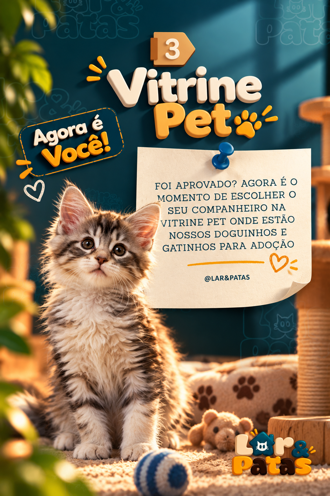
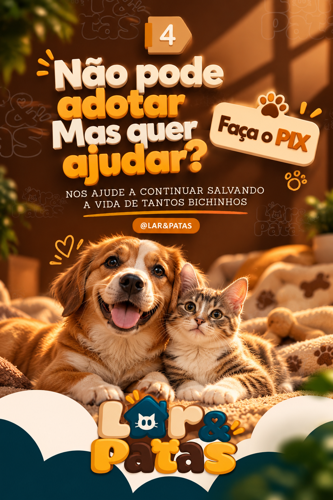
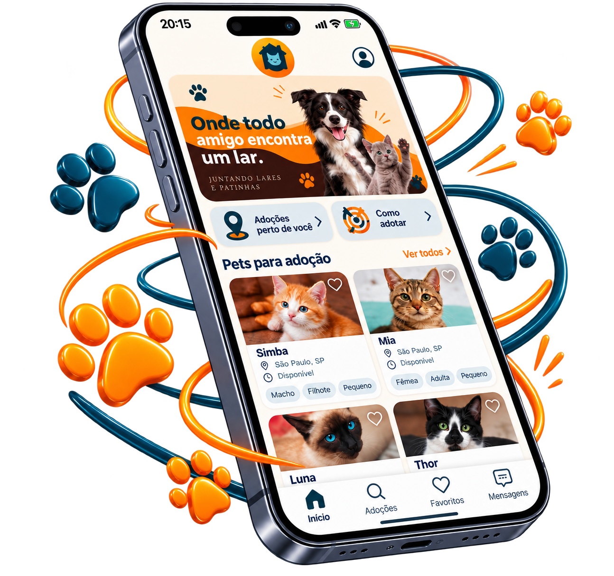

Bem-vindo ao Lar&Patas
Encontre seu novo amigo de quatro patas!
Como Funciona a Adoção
Descubra como é fácil adotar um animal de estimação e dar a ele um lar amoroso.




Quem somos
O Lar&Patas é uma organização dedicada a encontrar lares amorosos para animais abandonados. Nosso objetivo é conectar pessoas com animais que precisam de um lar.
- 469+ Animais Adotados
- 6+ Instituições Parceiras
- 75+ Voluntários
- 15+ Cidades atendidas
Escolha seu amigo na vitrine Pet
Veja os cães e gatos disponíveis, filtre por porte e idade e favorite os que mais combinam com você.
Ver Pets para adoção
Histórias de Adoção
Quem já abriu a porta de casa para um novo amigo conta como foi.


Novos pets chegam toda semana
Siga o @lar&patas nas redes sociais para ver quem acabou de entrar na vitrine.
Nossos Parceiros
Conheça as instituições que trabalham conosco para ajudar os animais.